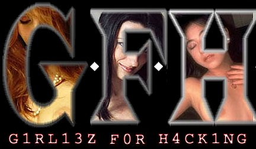

The 'c' in 'rap' is silent.
Oh well. Just continuing the ownership of everything that HFG owned in
the past. Now you know what we're planning to own next :-)
Well, Carolyn has already fallen. Mchammer has just fallen.
What might be next on the 'ownership horizon'? :P
Innetix security sucks. Big web hosting company admins can't even secure
their own Solaris and Linux boxes? Hrmph.
Rap music is still as crap as ever. It isn't part of 'black culture',
despite what some would have you believe.
Time to go. Girliez (well, actually, for me, the singular 'girlie')
waiting.
*end of defacement*